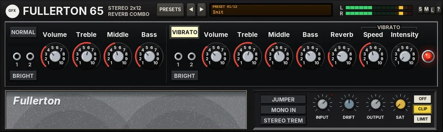

Fullerton 65
A stereo two-channel 2x12 valve combo with huge clean headroom, a scooped tone stack, a long three-spring reverb and an optical tremolo.

Overview
Fullerton 65 is a two-channel valve combo with two 12-inch speakers in an open-back cabinet, in the spirit of the mid-60s American reverb combos: lots of clean headroom, a sparkling top end, a scooped middle, a long, drippy spring reverb and a smooth, throbbing tremolo. It suits electric piano just as well as guitar - see the Keys presets.
There are two channels, as on the real amp. NORMAL is the plain channel: a preamp valve, the passive TREBLE / MIDDLE / BASS tone stack (with its natural mid scoop) and VOLUME with a BRIGHT switch. VIBRATO has the same preamp and tone stack, then the reverb and the tremolo. The reverb is a tank of three coupled springs driven by its own valve, about 2 seconds long and dark, with more 'drip' on every round trip. The 'vibrato' is really an optical tremolo: a lamp flashes onto a light-dependent cell that pulls the level down, so the throb is smooth and slightly lopsided. JUMPER feeds the guitar into both channels at once.
After the channels comes a push-pull power stage with four 6L6-style valves and negative feedback: very clean up to full power, then a firm clip, with a little supply sag when pushed hard. It is a stereo amp: the left and right inputs each run their own complete amp, and the two speakers are not quite the same (the left one warmer, the right one brighter), nor are the two reverb tanks, so even a mono source comes out with a little width. The amp runs at twice the sample rate. DRIFT lets the valves and the supply wander, as on real hardware.
Reach for it for
- Sparkling, glassy clean guitar with plenty of headroom
- Surf guitar with a deep, splashy spring reverb
- Country twang and chicken pickin' on the NORMAL channel
- Classic throbbing tremolo, in mono or swirling across the stereo field
- Electric piano: warm, round keys with a touch of reverb and stereo tremolo
- Edge-of-breakup grit when VOLUME is turned well up
Controls
The header
- PRESETS, ◄ / ► and display
- PRESETS (or a click on the display) opens the list of factory presets; the ◄ / ► keys step through them. The display shows the preset number and name. See Presets below.
- L / R meters
- The output level of each side.
- S / M / L
- Panel size: small, medium or large (large by default). The panel also scales to fit the plugin window.
- ?
- Opens a pop-up with the design credit, the GFX website address and the address of this manual. Click anywhere to close it.
NORMAL
The plain channel: no reverb and no tremolo. The tone knobs and VOLUME are numbered 1 to 10, as on the amp.
- NORMAL
- Plays through the NORMAL channel (like plugging into its input). Clicking it also switches JUMPER off. The input jacks under it are only there for the look.
- BRIGHT
- A small capacitor across the VOLUME pot that lets the top end through: more sparkle and bite. It is strongest at low volume and fades away as VOLUME goes up, until it does nothing at 10. Off by default.
- Volume
- The channel volume, 1 to 10 (4 by default), with the feel of a real audio-taper pot: 1 is silent and most of the level comes in the upper half. Turned well up, it drives the next valve and the power stage towards breakup.
- Treble
- The treble of the passive tone stack, 1 to 10 (6 by default).
- Middle
- The middle, 1 to 10 (5 by default). The stack scoops the mids by nature; turning MIDDLE up fills the scoop in, turning it down deepens it.
- Bass
- The bass, 1 to 10 (4 by default). Like the real circuit the three controls interact: with all three low the amp gets much quieter, and treble and bass change how deep the mid scoop sits.
VIBRATO
- VIBRATO
- Plays through the VIBRATO channel; this is the default. Clicking it also switches JUMPER off.
- BRIGHT, Volume, Treble, Middle, Bass
- As on NORMAL, with the same ranges and defaults (BRIGHT off, VOLUME 4, TREBLE 6, MIDDLE 5, BASS 4).
- Reverb
- How much of the spring reverb returns, 1 to 10 (3 by default); 1 is dry. The send is fixed, so hitting the amp harder also drives the reverb's own valve into a little grit. When you switch to NORMAL, the reverb rings out rather than stopping dead.
- Speed
- The tremolo rate, 1 to 10: about 1.5 Hz at 1, 3.3 Hz at the default 5, 9 Hz at 10.
- Intensity
- The tremolo depth, 1 to 10 (1 by default, which is off). At 10 the cell pulls the level down by about 21 dB on each throb. The lamp darkens the cell quickly and lets go slowly, so the throb is smooth rather than choppy.
- Pilot lamp
- The red jewel; just for the look.
The lower panel
- JUMPER
- Feeds the input to both channels at once, like a patch lead between the two inputs; both channel keys light up. The two channels add up in phase, for a fuller, louder sound, and you can blend them with the two VOLUME knobs (NORMAL is dry, VIBRATO carries the reverb and tremolo). Off by default.
- MONO IN
- Feeds the sum of the left and right inputs to both amps. Use it for a mono source on a stereo track, or to make a stereo keyboard sound like it goes through one amp. Off by default.
- STEREO TREM
- The right side throbs in the opposite phase to the left, so the tremolo swings from side to side. Off by default (both sides throb together).
- INPUT
- Input trim before the amp, -24 to +12 dB (0 dB by default). With 0 dBFS at about 1 volt at the jack, raising it pushes the amp towards breakup; lowering it keeps hot keyboards clean.
- GUARD
- Click the INPUT knob (without moving it) to switch the guard; its light sits at the knob's upper right. Off by default. When on, it gently eases very hot sources down towards about -18 dBFS average and catches fast peaks above -6 dBFS, so loud sources never slam the amp. It never boosts quiet sources. The light glows brighter while it is catching peaks.
- DRIFT
- How much the valves and the supply wander, 0 to 100% (50% by default). See Drift below.
- OUTPUT
- Output level after the speakers, -24 to +12 dB (0 dB by default).
- SAT
- Band saturation on the way out, 0 to 100% (0 by default): only the lows and highs are saturated (the mids stay clean), with a soft curve that loosens as the level rises.
- OFF / CLIP / LIMIT
- The final stage: nothing, a soft clipper at -0.3 dBFS (no latency), or a lookahead limiter that holds the peaks at -0.3 dBFS (3 ms latency, compensated by REAPER). CLIP is on by default; its key flashes red while it is clipping.
Drift
DRIFT lets the amp wander slowly, as a real valve amp does while it warms up and plays. Each valve's bias wanders (each side on its own), the supply breathes a little, the power valves drift slightly out of balance, and the tremolo rate wanders by up to about 2.5%. The effect is a small, living change in the tone and the way it breaks up. 50% is the standard amount; 0% keeps the amp perfectly steady.
Knobs: drag up or down (Shift for fine moves), or use the mouse wheel; double-click to reset a knob to its default. The value shows under a knob while you touch it.
Presets
Presets set both channels, JUMPER, the reverb, the tremolo, STEREO TREM, MONO IN (always off), DRIFT and OUTPUT (which evens out the loudness). INPUT, GUARD, SAT and the output stage are left as they are, except by Reset all to defaults.
- Init
- The starting point: the VIBRATO channel with every knob at its default, a little reverb and no tremolo.
- Sparkle Clean
- VIBRATO with low volume, treble up, a deeper mid scoop and BRIGHT on: glassy and clean, with a touch of reverb.
- Surf Reverb
- BRIGHT and bright treble with the reverb at 8.5: a deep, splashy spring. OUTPUT is down 13 dB to match.
- Country Twang
- The NORMAL channel, treble at 8, mids scooped and BRIGHT on: dry, snappy twang.
- Jazz Warm
- Treble at 3.5, middle and bass at 6, a little reverb: round and warm.
- Tremolo Ballad
- A slow, medium-deep tremolo (SPEED 3.5, INTENSITY 5.5) with a bit more reverb.
- Stereo Throb
- A faster, deep tremolo (SPEED 5.5, INTENSITY 7) with STEREO TREM on, swinging from side to side.
- Pushed Edge
- VOLUME at 7.5 with BRIGHT on and the mids filled in: the amp starts to bite. DRIFT 60%.
- Jumpered Fat
- JUMPER on, with NORMAL set warm and mid-heavy and VIBRATO bright, both volumes up: a fat, full blend of the two channels.
- Keys Clean
- For electric piano: flat-ish tone (treble 5.5, middle and bass 5), low volume and a little reverb. Clean and round.
- Keys Trem
- For electric piano: the same tone with a medium stereo tremolo (SPEED 4.5, INTENSITY 6) and a little reverb.
- Edge of Breakup
- VOLUME at 6.5 with BRIGHT off: clean when you play softly, gritty when you dig in.
- Reset all to defaults
- Every control back to its starting value, including INPUT, GUARD, SAT and the output stage (CLIP). It appears in the list only.
Tips
- Most of the clean sparkle lives on the VIBRATO channel with VOLUME low and BRIGHT on; as you turn VOLUME up, BRIGHT matters less and less.
- For more breakup, raise VOLUME first, then INPUT. Use OUTPUT to bring the level back down.
- For electric piano, try MONO IN off and STEREO TREM on with a stereo source: each side has its own amp and speaker, so the instrument stays wide.
- The tremolo is on the VIBRATO channel only. If you hear none, check you are not on NORMAL and that INTENSITY is above 1.
- With JUMPER on, set NORMAL's VOLUME for the dry body and VIBRATO's for the reverb and tremolo.
- Set DRIFT to 0 for a static, repeatable amp; leave it near 50% for a more alive, hardware-like feel.
File: gfx-fullerton-65.jsfx